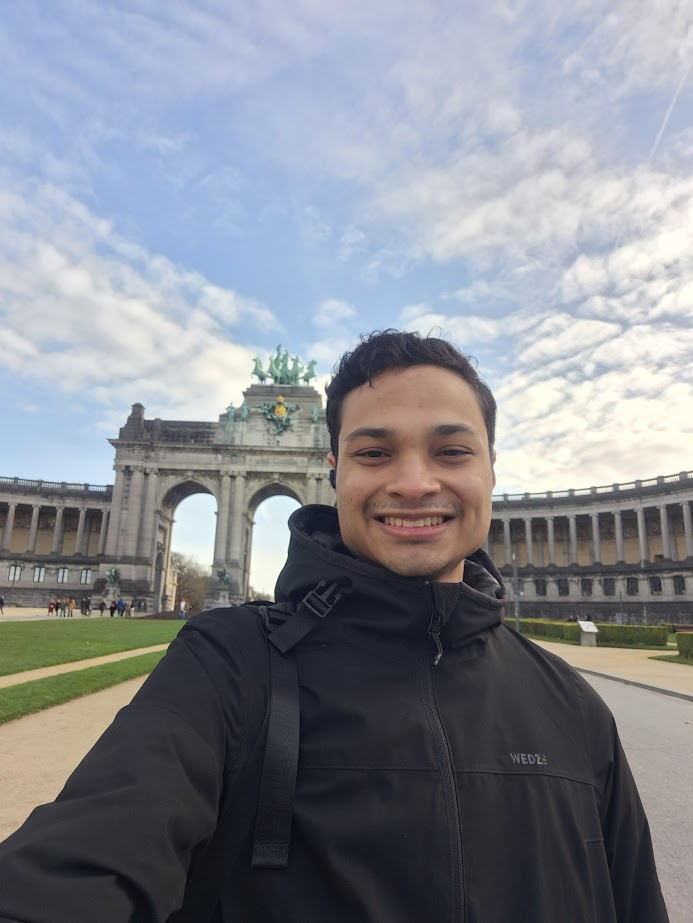

About Me
My name is Emilio, I was born in Venezuela and I currenttly live in Spain. I am currently working as a Project Manager for a Web Development agency. I love videogames specially League of Legends, Star Wars The Old Republic and Pokemon.
Madrid, Spain
Spain, officially Kingdom of Spain, it is the largest country in Southern Europe and the fourth-most populous European Union member state. Spanning across the majority of the Iberian Peninsula, its territory also includes the Canary Islands, in the Eastern Atlantic Ocean, the Balearic Islands, in the Western Mediterranean Sea, and the autonomous cities of Ceuta and Melilla, in Africa.